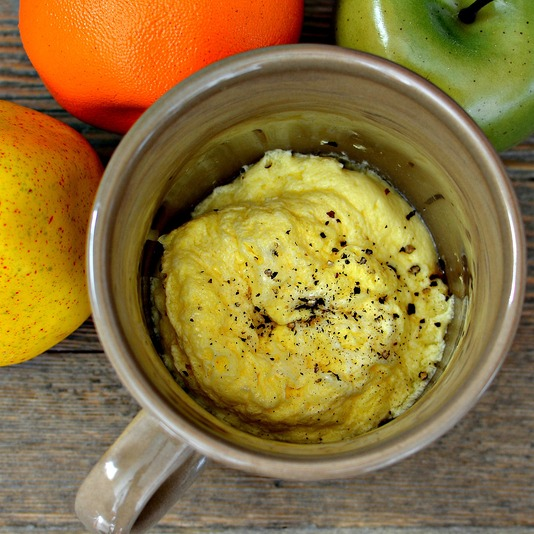

Back to the Homepage
Scrambled Eggs in a Mug

Description
These delicious scrambled eggs are quick and easy to make, and for all the family.
Ingredients
(for 1 serving)
- 1 egg
- 1 tablespoon of milk
- 1 pinch ground black pepper (Optional)
Steps
- Crack egg into a microwave-safe mug; beat until even in color. Pour in milk and beat until light yellow in color.
- Heat in microwave until cooked through and fluffy, about 90 seconds. Sprinkle pepper over egg.
Nutrition Facts
Per Serving: 82 calories; protein 6.9g; carbohydrates 1.7g; fat 5.3g; cholesterol 187.2mg; sodium 76.7mg.